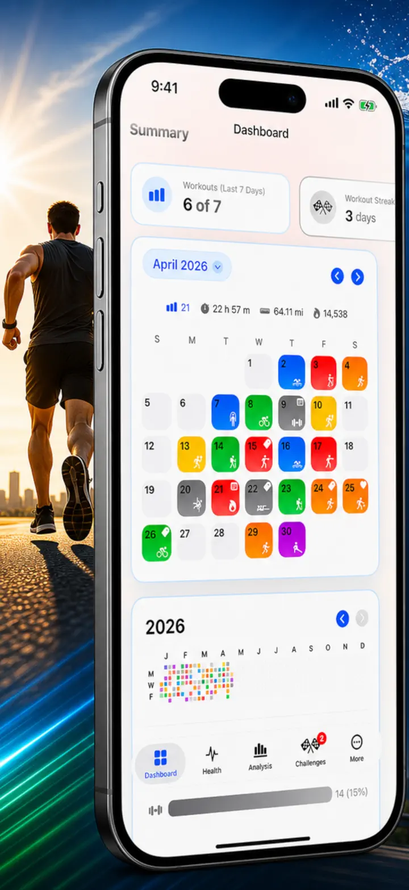
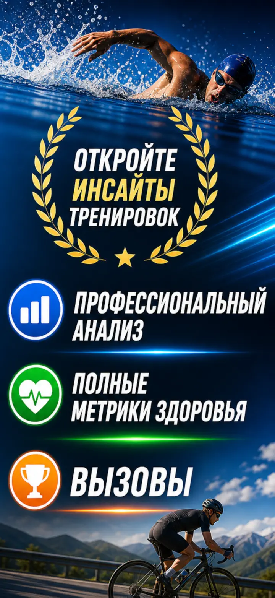
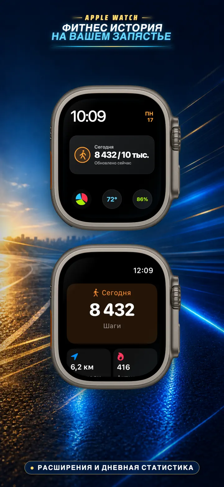
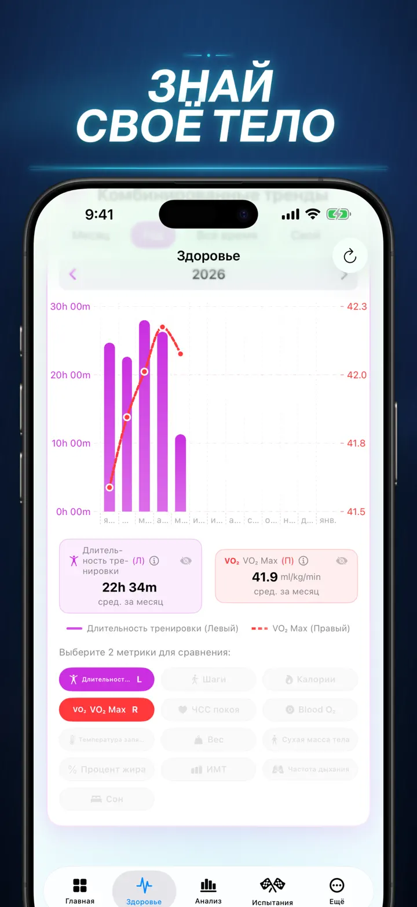
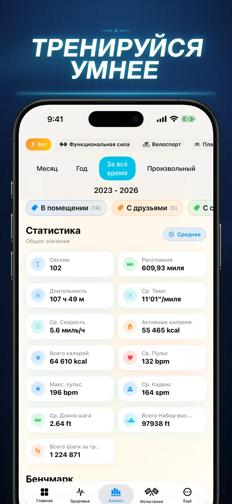
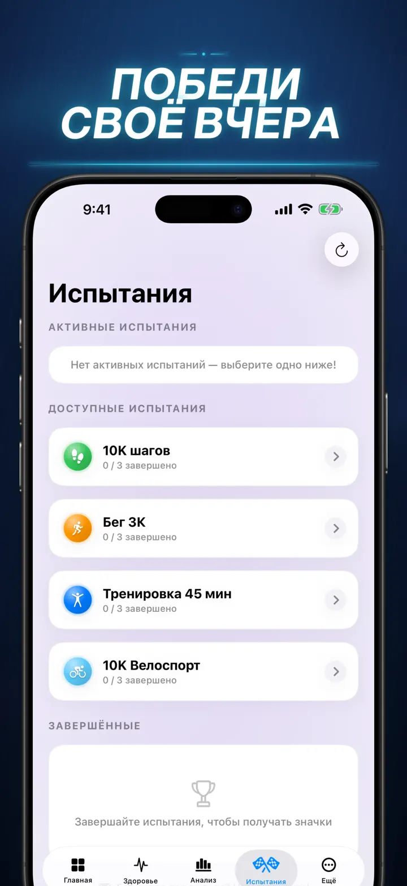
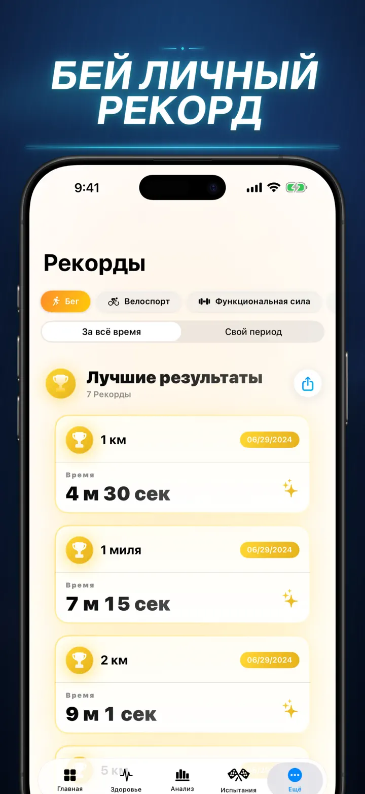
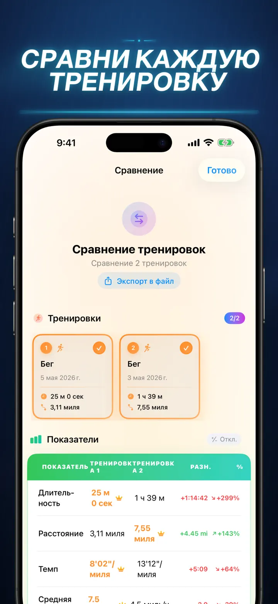
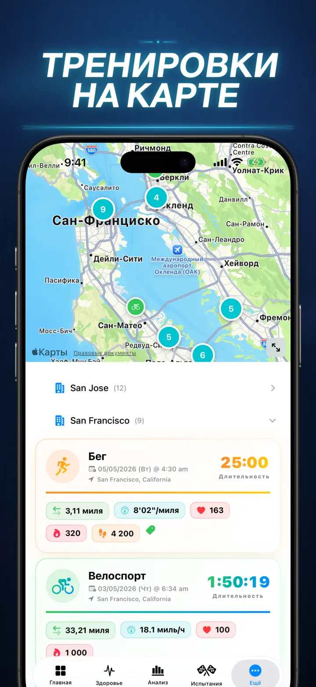
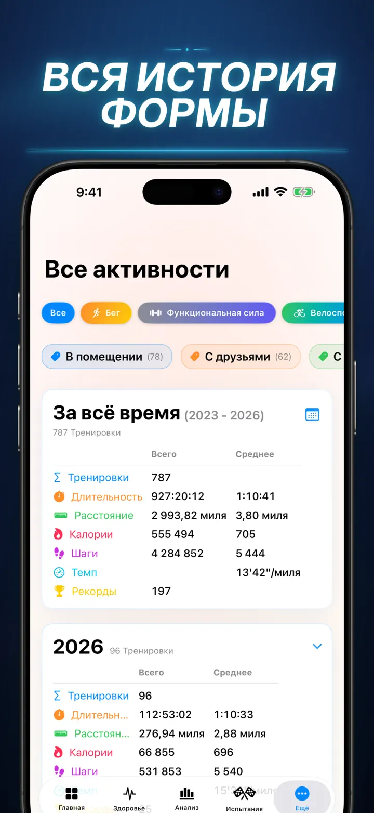

Фитнес История
Раскройте данные тренировок
Теперь на Apple Watch: шаги за сегодня на любом циферблате и экран «Сегодня» с дистанцией, калориями и этажами — прямо из Apple Здоровье.
Загрузить из App Store
О приложении
Хватит гадать. Пора знать наверняка. Фитнес История превращает данные Apple Здоровье в самый мощный и детальный анализ на iOS. Без аккаунтов. Без серверов. Только ваш фитнес-путь — наглядно и понятно.
Будь то отслеживание фаз сна, анализ каденса на пробежке или подготовка к марафону — это универсальный дашборд, которого заслуживают ваши усилия.
Работает с любым устройством или приложением, которое синхронизируется с Apple Здоровье — Apple Watch, Garmin, Polar, Suunto, Zwift и не только.
ПРОФЕССИОНАЛЬНЫЙ АНАЛИЗ
- Графики трендов и бенчмарков: диаграммы «ящик с усами» показывают медиану, квартили и выбросы для каждого вида спорта.
- Детальная разбивка: фильтруйте историю по времени суток, дистанции, длительности, темпу, набору высоты, каденсу и длине шага.
- Рейтинг всего: одним нажатием сравните сегодняшние метрики (дистанция, темп, ЧСС и др.) со всей историей. Мгновенно узнайте, попали ли вы в «Топ 15%».
- Граф активности: тепловая карта в стиле GitHub всей вашей истории тренировок. Переверните, чтобы увидеть детальную статистику за день.
ТРЕНИРОВКИ ПО-НОВОМУ
- Умные карты: раскрашивайте маршруты по скорости, высоте или зонам пульса. (Поддержка коррекции карт Китая).
- Глубокий анализ сплитов: просматривайте километровые или мильные сплиты с темпом, высотой, ЧСС и каденсом для каждого круга.
- Зоны пульса: визуализация времени в настраиваемых зонах 1–5 на основе возраста и пульса покоя.
- Контекст тренировки: добавляйте фото, заметки с форматированием, оценку усилий (1–10) и пользовательские теги к каждой тренировке.
ПОЛНЫЙ КОНТРОЛЬ ЗДОРОВЬЯ
- Все показатели Apple Watch — в одном месте с дневными, недельными и годовыми трендами:
- Кардио: пульс покоя, VO2 Max (с поправкой на возраст), кислород крови и частота дыхания.
- Состав тела: вес, процент жира, сухая масса и ИМТ с индикаторами трендов.
- Активность и восстановление: шаги (с почасовой разбивкой), активные и базовые калории, отклонения температуры запястья.
- Продвинутый трекинг сна: фазы глубокого сна, Core, REM и бодрствования — визуализация по ночам.
- Наложение метрик: совмещайте несколько показателей здоровья, чтобы увидеть, как сон влияет на пульс или вес — на VO2 Max.
СРАВНИВАЙТЕ И СОРЕВНУЙТЕСЬ
- Сравнение тренировок: выберите до 10 тренировок для сравнения. Смотрите процент отклонений (напр., «+1,5% быстрее») по каждой метрике и сплиту!
- Экспорт сравнений: хотите анализировать в других инструментах? Экспортируйте сравнение тренировок!
- Личные рекорды: автоматическое отслеживание на 1К, 5К, 10К, полумарафон, марафон и произвольные дистанции. Получайте золотые, серебряные и бронзовые трофеи.
- Лента достижений: хронологическая история всех рекордов, достижений и тренировок.
ВАШИ ДАННЫЕ — ВЕЗДЕ
- Глобальная карта: все места ваших тренировок на интерактивной карте мира с кластеризацией.
- Мощный экспорт: выгружайте всю историю (или выбранные периоды) в CSV или JSON. Полные данные сплитов, метрик тела и метаданных.
- Синхронизация iCloud: избранное, теги, заметки и оценки мгновенно синхронизируются на всех устройствах.
- Приватность прежде всего: никаких скрытых серверов. Данные хранятся на вашем устройстве и в вашем приватном iCloud.
- Ваш пот рассказывает историю. Пора её прочитать. Скачайте Фитнес История сегодня.
Скачайте Фитнес История и раскройте свой потенциал!
Privacy Policy: https://masawata.net/privacy-policy.html Terms Of Service: https://www.apple.com/legal/internet-services/itunes/dev/stdeula/
Снимки экрана









Фитнес История
Теперь на Apple Watch: шаги за сегодня на любом циферблате и экран «Сегодня» с дистанцией, калориями и этажами — прямо из Apple Здоровье.
Загрузить из App Store